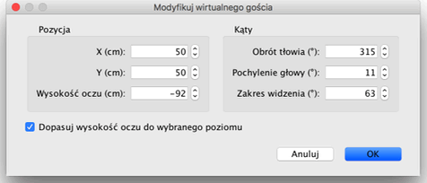
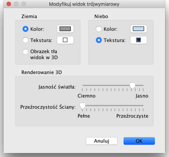

| Modyfikacja widoku 3D | |||
| Wybierz Widok 3D >Widok z góry lub Widok 3D > Wirtualna wizyta aby przełączyć się pomiędzy dwoma dostępnymi sposobami reprezentacji podglądu 3D.
Kiedy wybrany jest Widok z góry Sweet Home 3D pokaże
w trójwymiarze, jak wygląda Twój dom patrząc
na niego z dużej wysokości. W tym trybie przesuwając
myszką z wciśniętym lewym klawiszem w prawo bądź
lewo sprawia, że dom obraca się w okół osi Y (punktu
przecięcia przekątnych budynku). Przesuwając myszą
do przodu lub tyłu z wciśniętym lewym klawiszem sprawiasz,
że dom obraca się w okół osi X (zmniejszając
lub zwiększając kąt pod jakim patrzymy na ściany).
W widoku 3D przy pomocy kółka myszy można w prosty
sposób regulować przybliżenie lub oddalenie. Kiedy pracujesz w trybie Wirtualnej wizyty na planie narysowany jest piktogram reprezentujący gościa widzianego z góry. Jego położenie i kąt obrotu jest uaktualniane przy każdym ruchu w oknie widoku 3D. Wirutalny gość jest otoczony przez 4 wskaźniki:
|


|
| Kiedy kursor myszy znajduje się nad jednym z ramion zmienia
swoją postać, tak aby wskazać możliwość
przeciągnięcia tego punktu w celu zmiany pochylenia głowy
lub obrotu ciała gościa. Kiedy wciśniesz klawisz myszy
pojawi się podpowiedź reprezentująca bieżącą
wartość zmienianego kąta.  W tym panelu można również zmienić zakres widzenia oraz zaznaczyć czy wysokość oczu powinna uwzględniać wysokość aktualnego poziomu. Dodatkowo wybierając Widok 3D > Modyfikuj widok 3D... mamy dostęp do funkcji odpowiedzialnych za kolor lub teksturę nieba i ziemi, jasność nieba oraz przeźroczystość ścian i podłóg.  |
|